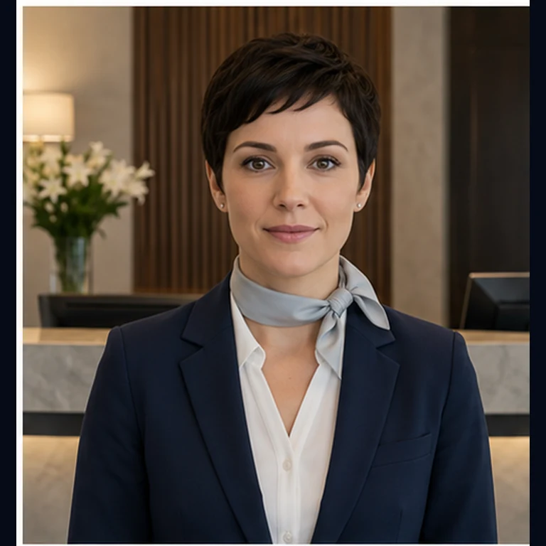
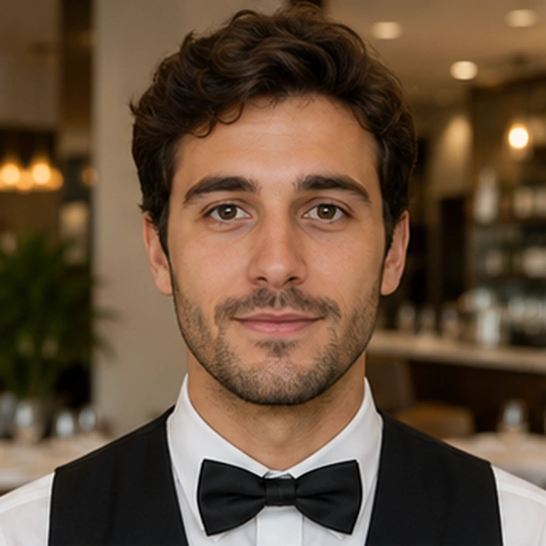
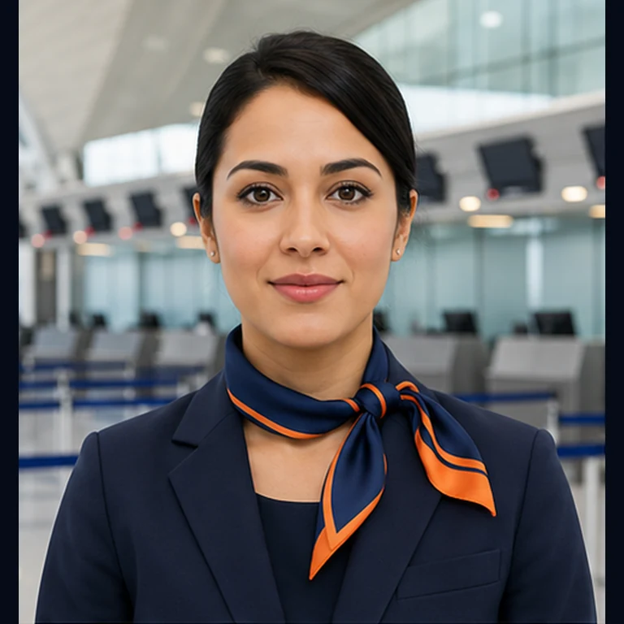

Her senaryo ayrı HTML dosyasıdır. Ortak kod chat-core.js, ortak tasarım chat-style.css dosyasındadır.

OtelResepsiyon konuşması · A2
RestoranSipariş konuşması · A2 DoktorKlinik konuşması · B1
HavaalanıCheck-in konuşması · A2 AI Öğretmen2 farklı gözlüklü öğretmen